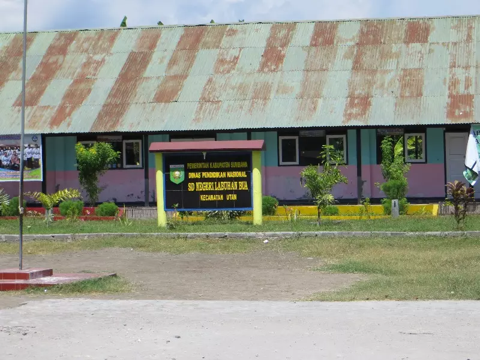

Pembelajaran bermakna
Membangun pemahaman melalui kegiatan belajar aktif yang dekat dengan pengalaman sehari-hari.
Pendidikan untuk masa depan
SD Negeri Labuhan Bua hadir sebagai ruang belajar yang dekat dengan masyarakat—membangun pengetahuan, karakter, dan keberanian setiap anak untuk melangkah lebih jauh.


Tentang sekolah
SD Negeri Labuhan Bua
Sebagai sekolah dasar negeri di Dusun Labuhan Bua, kami menjadi bagian dari perjalanan tumbuh anak-anak Desa Pukat dan masyarakat sekitarnya.
Lingkungan belajar dibangun melalui kebersamaan guru, siswa, orang tua, dan masyarakat agar setiap anak merasa aman untuk belajar dan berkembang.
Lihat identitas sekolah
Sambutan Kepala Sekolah
Assalamu’alaikum warahmatullahi wabarakatuh.
Puji syukur ke hadirat Allah SWT atas segala rahmat dan karunia-Nya. Dengan penuh rasa bangga, kami menyambut Bapak, Ibu, dan seluruh pengunjung di website SD Negeri Labuhan Bua.
Website ini kami hadirkan sebagai sarana informasi dan komunikasi antara sekolah, peserta didik, orang tua, serta masyarakat. Kami berkomitmen menciptakan lingkungan belajar yang aman, menyenangkan, dan bermakna agar setiap anak dapat tumbuh menjadi pribadi yang berkarakter, mandiri, kreatif, dan berprestasi.
Terima kasih atas kepercayaan, dukungan, dan kerja sama seluruh keluarga besar sekolah. Mari bersama-sama memberikan pendidikan terbaik bagi generasi masa depan.
“Mendidik dengan hati, bertumbuh bersama, dan melangkah menuju masa depan.”
Adi Putra Jaya, S.Pd.Kepala SD Negeri Labuhan BuaPengalaman belajar
Rangkaian kegiatan sekolah mendukung perkembangan pengetahuan, karakter, kebugaran, dan kepedulian sosial siswa.
Membangun pemahaman melalui kegiatan belajar aktif yang dekat dengan pengalaman sehari-hari.
Membiasakan sikap disiplin, tanggung jawab, gotong royong, dan kepedulian sejak dini.
Memberi ruang bagi siswa untuk berekspresi, berkarya, bergerak, dan berani tampil.
Identitas sekolah
Informasi dasar satuan pendidikan untuk membantu orang tua dan masyarakat mengenali SD Negeri Labuhan Bua.
Lihat data pendidikanGaleri sekolah
Cuplikan suasana belajar, kebersamaan, dan kegiatan siswa di lingkungan sekolah.
Hubungi sekolah
Untuk informasi administrasi, pendaftaran, atau kegiatan sekolah, silakan kunjungi sekolah atau kirimkan email kepada kami.